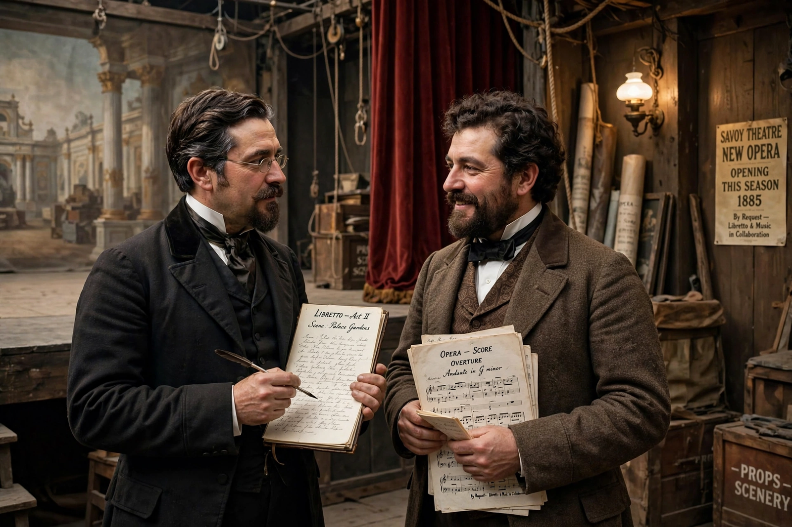

Gilbert and Sullivan

Gilbert and Sullivan refers to the Victorian-era theatrical partnership of librettist W. S. Gilbert (1836–1911) and composer Arthur Sullivan (1842–1900) and to the works they created together. The two collaborated on fourteen comic operas between 1871 and 1896, of which H.M.S. Pinafore, The Pirates of Penzance and The Mikado are among the best known.
The partnership
Brought together by producer Richard D'Oyly Carte, Gilbert and Sullivan first collaborated on Thespis (1871) and achieved their first hit with Trial by Jury (1875). Their operas were produced by the D'Oyly Carte Opera Company at the Savoy Theatre in London, built by Carte in 1881 specifically for their works; hence the operas are collectively known as the "Savoy operas".
Works and style
Gilbert's libretti combine absurd "topsy-turvy" situations with witty dialogue and satire of Victorian institutions — the law, the navy, the House of Lords, aestheticism (mocked in Patience) — while Sullivan's music, indebted to Mendelssohn, Schubert and Victorian ballad, gives the satire elegance and warmth. Their major works include The Sorcerer (1877), H.M.S. Pinafore (1878), The Pirates of Penzance (1879), Iolanthe (1882), Princess Ida (1884), The Mikado (1885), Ruddigore (1887), The Yeomen of the Guard (1888) and The Gondoliers (1889).
The partnership was often strained by artistic disagreements and the famous "carpet quarrel" of 1890 over expenses at the Savoy. Their final opera, The Grand Duke (1896), was a failure. Sullivan died in 1900; Gilbert continued writing into the Edwardian era.
Legacy
The operas have been in near-continuous performance in the English-speaking world for well over a century, shaping the development of the modern musical. The D'Oyly Carte Opera Company performed them almost exclusively until 1982; amateur and professional productions remain ubiquitous.